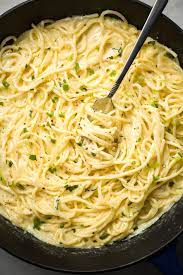

diffrent Spaghetti dishes

creamy cheesy spaghetti
Ingridients
- 1 large egg
- 3 tablespoons finely chopped fresh basil (plus more for serving)
- 3 tablespoons finely chopped fresh parsley
- 1 teaspoon dried oregano
- 3/4 teaspoon salt
Instruction
- Cook Spaghetti: Cook the spaghetti according to the directions on the package. Do not drain it yet.
- Heat Oil: In the meantime, heat olive oil in a large skillet set over medium heat.
- Add Garlic: Add garlic to the oil and cook for 30 seconds, or until fragrant. Do not burn the garlic.
- Whisk: Whisk the cream cheese and water until well combined.
- Add Cheese & Seasonings: Whisk in the parmesan cheese; taste for salt and pepper and adjust accordingly.
sauce consistency.
- Drain Spaghetti: Drain your spaghetti and then return it back to the cooking pot.
- Add Sauce: Add the cream cheese sauce to the spaghetti; stir until combined.
- Garnish & Serve: Garnish with a crack of black pepper and chopped parsley, if desired.
spaghetti and meatball

Ingridients
- 1 large egg
- 3 tablespoons finely chopped fresh basil (plus more for serving)
- 3 tablespoons finely chopped fresh parsley
- 1 teaspoon dried oregano
- 3/4 teaspoon salt
Instruction
- Cook Spaghetti: Cook the spaghetti according to the directions on the package. Do not drain it yet.
- Heat Oil: In the meantime, heat olive oil in a large skillet set over medium heat.
- Add Garlic: Add garlic to the oil and cook for 30 seconds, or until fragrant. Do not burn the garlic.
- Whisk: Whisk the cream cheese and water until well combined.
- Add Cheese & Seasonings: Whisk in the parmesan cheese; taste for salt and pepper and adjust accordingly.
sauce consistency.
- Drain Spaghetti: Drain your spaghetti and then return it back to the cooking pot.
- Add Sauce: Add the cream cheese sauce to the spaghetti; stir until combined.
- Garnish & Serve: Garnish with a crack of black pepper and chopped parsley, if desired.
Follow the video